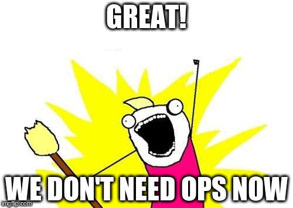

TI Self Service
E um pouco de Rundeck, Ansible Tower, e ManageIQ
Diego Morales
Ágil + Cloud = DevOps
- Veio o manifesto ágil
- Veio a nuvem ... e o mundo mudou
- Não foi a escala ... ou a velocidade
Foi o controle ... dado ao desenvolvedor.
A nuvem é Self Service
#NOOPS !?
Não precisa de ... ?
Backup, monitoramento, balanceamento, HA/Failover, firewall, hardening, ...
Agora são também serviços a serem consumidos.
E + conhecimento/tuning de OS, DB, Storage, Rede?
Nuvem pública + lado direito
Liberdade, retrabalho e bagunça
Compliance, PCI e outros monstros
Várias oportunidade para inserção de controles, checks, padronizações e permitir maior foco aos devs .. seja nuvem pública, privada ou um ambiente legado.
Ferramentas
DEMO
Referências
Contato
Diego Morales
 dmorales@stone.com.br
dmorales@stone.com.br
 @dgmorales
@dgmorales
 /papodesysadmin
/papodesysadmin
doauto.blog
Slides: http://dgmorales.info/talks/ti-self-service